Towards Fully Integrated Autonomous Excavation: Autonomous Excavator for Precise Earth Cutting and Onboard Landscape Inspection
Inkyu Jang, Junha Kim, Dongjae Lee, Changhyeon Kim, Changsuk Oh, Youngbum Kim, Sangwook Woo, Heejee Sung, H. Jin Kim · IEEE Robotics & Automation Magazine
한줄 요약 — 30톤 실장비에서 dual-LiDAR 2.5D terrain estimation, normal digging·tip grading·A* 경로 생성, 힘·동력·실린더·펌프 제약 MPC, stereo 다중영상 bundle adjustment 검사를 연결해 45° 사면을 10 cm 이내로 시공하고, 75~101 m² 구역의 표면 검사 중앙오차 0.4~0.8 cm와 현장 검사시간 0.74 s/m²를 보였다.
1.연구 배경 및 동기
인식·굴착·검사를 폐루프로 연결한 실제 대형 굴착기 자율시공
기존 자율 굴착 연구는 버킷 궤적 생성, 저수준 제어, 지형 인식 또는 작업 후 측량 중 일부만 다루는 경우가 많다. 그러나 실제 토공에서는 굴착할 때마다 표면이 변하고, 버킷과 토사에 가려 센서 시야가 달라지며, 목표 형상에 도달했는지를 독립적으로 검사해야 다음 굴착이나 종료를 결정할 수 있다. 특히 30톤급 장비가 45° 상향 사면을 만드는 작업은 큰 토량과 유압 제약, 센서 진동, 지표면의 비정형성이 동시에 존재한다.
논문은 실시간 지형추정, 고수준 굴착경로 생성, 제약 MPC, 작업 후 정밀검사를 하나의 autonomous excavation system으로 통합한다. 굴착 중에는 boom과 cabin에 장착한 두 3D LiDAR를 사용해 빠른 2.5D 지도를 갱신하고, 정상 굴착과 tip grading을 조합해 목표 표면에 접근한다. 일정 구역을 처리한 뒤에는 진동에 민감한 LiDAR 대신 boom 장착 stereo camera로 여러 시점 영상을 수집하고 제한된 bundle adjustment를 수행해 cm 이하 정밀도로 결과를 판정한다.
저자들이 강조하는 차별점은 각 모듈의 개별 정확도뿐 아니라 실제 작업 사이클의 폐루프다. 추정 지도에서 공격점을 선택하고 궤적을 계획해 굴착한 뒤, 재추정된 표면으로 다음 경로를 갱신하며, 마지막에는 정밀 검사 결과가 허용오차를 넘으면 다시 굴착한다. 45° 상향 사면의 실제 반복 작업을 통해 이러한 통합이 대형 유압 굴착기에서 동작함을 보였다.
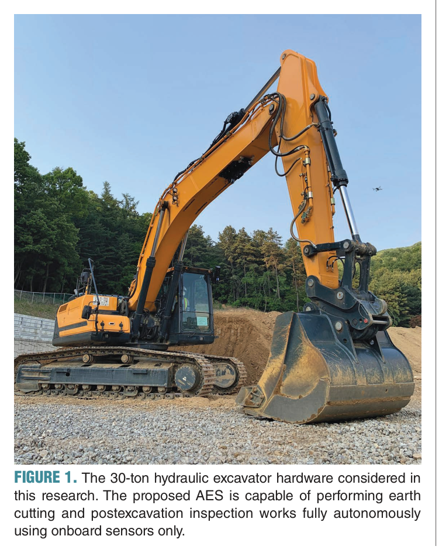
원문 Figure 1 · PDF p.2 — FIGURE 1. The 30-ton hydraulic excavator hardware considered in this research. The proposed AES is capable of performing earth cutting and postexcavation inspection works fully autonomously using onboard sensors only.
선행 연구의 한계
개별 인식·계획·제어 연구는 작업 후 결과를 독립 측량해 재작업 여부를 결정하는 전체 사이클을 제공하지 못한다.
단일 고정 LiDAR는 boom·bucket·토사에 의한 가림과 작업 자세 변화로 전체 작업영역을 안정적으로 관찰하기 어렵다.
굴착 중 사용하는 실시간 지형지도는 센서 진동과 낮은 해상도 때문에 최종 품질 검사의 sub-centimeter 요구를 충족하기 어렵다.
기하학적 버킷 팁 경로만으로는 대형 유압계의 동력·실린더 stroke·펌프 유량 제약을 보장할 수 없다.
일반적인 전수 bundle adjustment는 현장 규모에서 계산시간이 길어 반복 작업 사이의 빠른 검사에 부적합하다.
이 연구의 기여
dual-LiDAR와 기계 box 제거, Kalman형 갱신을 이용한 2.5D 실시간 landscape estimator를 구현했다.
normal digging, tip grading과 4차원 A*를 결합한 다섯 단계 작업경로 생성기를 실제 장비에 통합했다.
유압 힘·동력·변위·펌프 유량을 포함하는 MPC를 10 Hz 이상으로 실행했다.
제한된 affine KLT 추적과 두 단계 bundle adjustment를 이용해 수십 초 내 sub-centimeter 표면검사를 수행했다.
30톤 HX300AL의 45° 사면 반복 굴착에서 전체 인식-계획-제어-검사 폐루프를 실증했다.
2.방법론 및 시스템 구성
시스템은 작업영역 설정, 실시간 지형 갱신, 공격점 및 굴착 궤적 생성, MPC 추종, 토사 dump, 작업 후 검사와 재작업 판단을 반복한다. 두 LiDAR 점군에서 굴착기 링크의 box model 내부 점을 제거하고 고정 2.5D grid로 투영한다. 각 cell의 높이는 확률 상태로 유지되며, 시간에 따른 지형 변화와 거리 증가에 따른 측정분산을 고려한 Kalman형 갱신으로 두 센서와 과거 지도를 융합한다.
굴착 궤적은 다섯 단계로 분해된다. 토양 내부의 normal digging은 현재 지표와 목표 지표 사이에서 공격점을 고르고 bucket capacity에 가까운 scoop를 만들도록 3차원 원통형 탐색공간에서 depth-first search한다. 목표면에 가까워지면 버킷 tip이 목표 표면을 따라가는 grading 동작을 사용한다. 진입 전 이동, 절삭 후 인출, dump 자세 이동과 복귀 같은 자유공간 단계는 cabin swing과 세 실린더 좌표의 4차원 A*로 계획한다.
저수준 MPC는 1차 운동학 모델을 사용하면서 실린더 힘·동력·변위와 펌프 유량 한계를 제약으로 둔다. 별도의 정밀검사에서는 stereo camera가 swing -30°부터 30°까지 여러 시점 영상을 취득한다. affine 제약을 둔 KLT로 특징을 추적하고, 첫 bundle adjustment에서는 고점수 FAST 특징 일부와 camera pose를 함께 최적화한다. 두 번째 단계에서는 pose를 고정하고 모든 점을 최적화해 full BA보다 계산량을 줄인다.
처리 파이프라인
1
다중 센서 보정과 작업영역 설정
cabin·boom LiDAR, boom stereo camera와 joint IMU·encoder를 장비 좌표계에 보정한다. checkerboard를 이용해 camera-to-camera, LiDAR-to-camera, LiDAR-to-LiDAR와 sensor-to-vehicle 변환을 구하고 목표 사면과 ROI를 설정한다.
2
실시간 2.5D 지형 추정
두 LiDAR 점군에서 기계 링크 box 내부점을 제거한 뒤 grid cell 높이로 변환한다. 상태 변화와 거리 의존 측정분산을 반영한 Kalman형 필터로 작업 중 지형을 5 Hz 수준에서 갱신한다.
3
공격점과 굴착 경로 생성
현재 지표와 목표 지표의 가장 먼 교차영역에서 공격점을 선택한다. normal digging은 3차원 원통 grid의 DFS로 bucket capacity에 가까운 scoop와 유리한 이동·동력을 찾고, 목표면 근처에서는 tip grading으로 전환한다.
4
자유공간 이동과 제약 MPC
굴착 전후의 이동은 cabin swing과 세 실린더의 4차원 A*로 충돌을 피한다. 생성된 경로는 6초 horizon, 0.04초 내부 간격의 MPC가 10 Hz 이상으로 추종하며 유압계 제한을 검사한다.
5
stereo 다중영상 정밀검사
굴착 후 장비를 의도적으로 swing하고 boom은 고정한 채 다중 영상을 수집한다. 제한된 KLT와 두 단계 BA로 camera trajectory와 고밀도 점군을 복원하고 목표 표면과의 높이 오차를 계산한다.
6
품질 판정과 반복 굴착
검사 결과가 목표 허용오차를 만족하면 작업을 종료하고, 부족한 영역이 남으면 갱신된 landscape를 이용해 새로운 공격점과 굴착 경로를 생성한다.
원문의 식 (5)에 제시된 기준 경로 추종과 입력 사용 최소화의 핵심 구조다. 예측과정에는 식 (4)의 힘·동력·실린더 변위·펌프 유량 제약이 함께 적용된다.
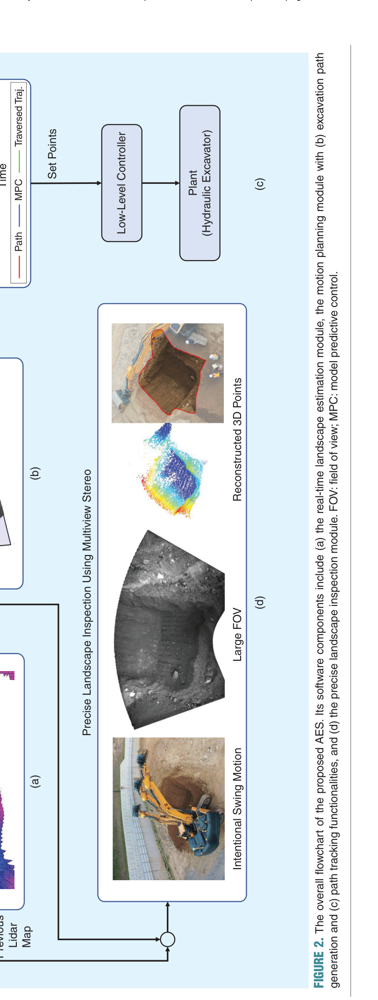
원문 Figure 2 · PDF p.4 — FIGURE 2. The overall flowchart of the proposed AES. Its software components include (a) the real-time landscape estimation module, the motion planning module with (b) excavation path generation and (c) path tracking functionalities, and (d) the precise landscape inspection module. FOV: field of view; MPC: model predictive control.
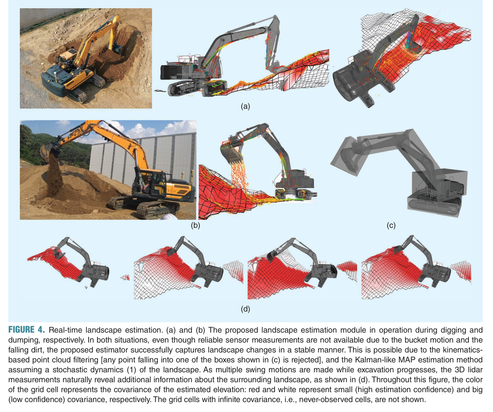
원문 Figure 4 · PDF p.7 — FIGURE 4. Real-time landscape estimation. (a) and (b) The proposed landscape estimation module in operation during digging and dumping, respectively. In both situations, even though reliable sensor measurements are not available due to the bucket motion and the falling dirt, the proposed estimator successfully captures landscape changes in a stable manner. This is possible due to the kinematics- based point cloud filtering [any point falling into one of the boxes shown in (c) is rejected], and the Kalman-like MAP estimation method assuming a stochastic dynamics (1) of the landscape. As multiple swing motions are made while excavation progresses, the 3D lidar measurements naturally reveal additional information about the surrounding landscape, as shown in (d). Throughout this figure, the color of the grid cell represents the covariance of the estimated elevation: red and white represent small (high estimation confidence) and big (low confidence) covariance, respectively. The grid cells with infinite covariance, i.e., never-observed cells, are not shown.
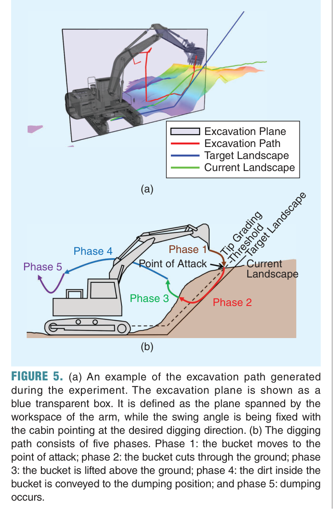
원문 Figure 5 · PDF p.8 — FIGURE 5. (a) An example of the excavation path generated during the experiment. The excavation plane is shown as a blue transparent box. It is defined as the plane spanned by the workspace of the arm, while the swing angle is being fixed with the cabin pointing at the desired digging direction. (b) The digging path consists of five phases. Phase 1: the bucket moves to the point of attack; phase 2: the bucket cuts through the ground; phase 3: the bucket is lifted above the ground; phase 4: the dirt inside the bucket is conveyed to the dumping position; and phase 5: dumping occurs.
3.핵심 기술
굴착 중에는 빠르게, 완료 후에는 정밀하게 보는 이중 인식
실시간 estimator는 cabin과 boom의 서로 다른 시야를 결합한다. 링크와 bucket 자체가 만드는 점군을 box model로 제거하고, 센서로부터 먼 cell일수록 분산을 키워 불확실한 관측의 비중을 낮춘다. 40 cm cell의 2.5D 지도는 정밀 측량에는 거칠지만 공격점과 잔여 토량을 수 Hz로 갱신하는 데 적합하다.
최종 검사는 별도 stereo 파이프라인을 사용한다. 굴착 진동이 끝난 후 의도적인 swing으로 충분한 시차를 확보하고, 140장 규모의 영상에서 특징 궤적을 만든다. 일부 고품질 점만 사용해 pose를 먼저 안정화한 뒤 pose를 고정하고 전체 점을 계산함으로써 full BA의 정확도에 접근하면서 처리시간을 크게 줄인다. 실시간 지도와 검사 지도를 역할별로 분리한 설계가 통합 시스템의 실용성을 높인다.
실시간 지도는 40 cm cell로 약 5 Hz 갱신된다.
최종 검사는 decimeter급 grid와 stereo multi-view reconstruction을 사용한다.
상향 검사에서 제안법은 75 m²를 48초, 평지에서는 101 m²를 59초에 처리했다.
네 장면의 제안 검사 중앙오차는 각각 0.4, 0.6, 0.8, 0.5 cm였다.
작업단계별 탐색과 유압 제약제어
normal digging은 버킷 팁 한 점의 최단경로가 아니라 버킷 형상과 용량을 반영한다. 현재 표면과 목표 표면 사이의 후보 절삭 궤적을 원통형 grid에서 탐색하고, 한 scoop가 bucket capacity에 가깝도록 하면서 이동과 동력의 휴리스틱을 적용한다. 목표면과의 차이가 grading threshold 아래로 줄면 버킷 팁을 목표면에 붙이는 tip grading으로 작업 모드를 바꾼다.
토양 밖의 이동은 4차원 A*로 구성해 cabin swing과 세 cylinder motion을 함께 다루고, MPC는 실제 구동기의 제약을 적용한다. horizon은 6초이고 내부 이산화 간격은 0.04초이며, onboard에서 한 번의 MPC 계산이 0.08초 미만이다. 제약을 제거한 ablation에서는 유압 한계를 넘는 입력이 나타나 실제 대형 장비에서 제약 모델이 필수임을 보여준다.
굴착 사이클을 토양 접근, normal digging 또는 grading, 인출, dump 이동, 복귀의 다섯 단계로 분해한다.
normal digging 후보는 3차원 원통 grid의 DFS로 탐색한다.
자유공간 구간은 cabin swing과 세 실린더를 포함한 4차원 A*를 사용한다.
고수준 경로 생성은 약 0.3초, MPC는 0.08초 미만으로 보고됐다.
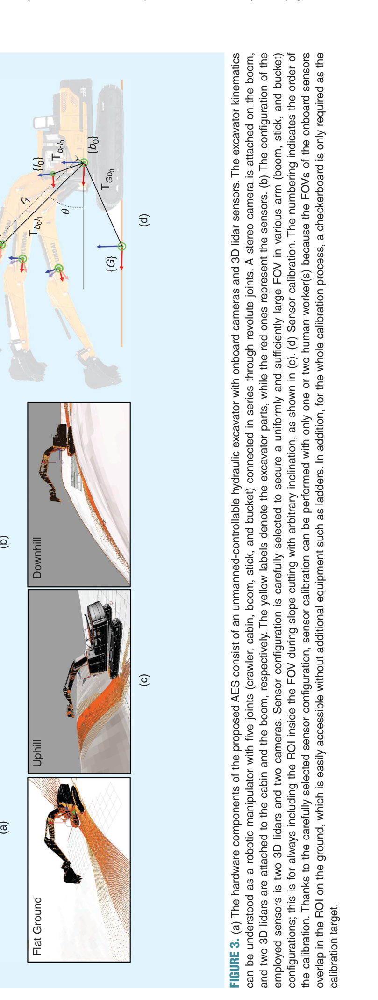
원문 Figure 3 · PDF p.5 — FIGURE 3. (a) The hardware components of the proposed AES consist of an unmanned-controllable hydraulic excavator with onboard cameras and 3D lidar sensors. The excavator kinematics can be understood as a robotic manipulator with five joints (crawler, cabin, boom, stick, and bucket) connected in series through revolute joints. A stereo camera is attached on the boom, and two 3D lidars are attached to the cabin and the boom, respectively. The yellow labels denote the excavator parts, while the red ones represent the sensors. (b) The configuration of the employed sensors is two 3D lidars and two cameras. Sensor configuration is carefully selected to secure a uniformly and sufficiently large FOV in various arm (boom, stick, and bucket) configurations; this is for always including the ROI inside the FOV during slope cutting with arbitrary inclination, as shown in (c). (d) Sensor calibration. The numbering indicates the order of the calibration. Thanks to the carefully selected sensor configuration, sensor calibration can be performed with only one or two human worker(s) because the FOVs of the onboard sensors overlap in the ROI on the ground, which is easily accessible without additional equipment such as ladders. In addition, for the whole calibration process, a checkerboard is only required as the calibration target.
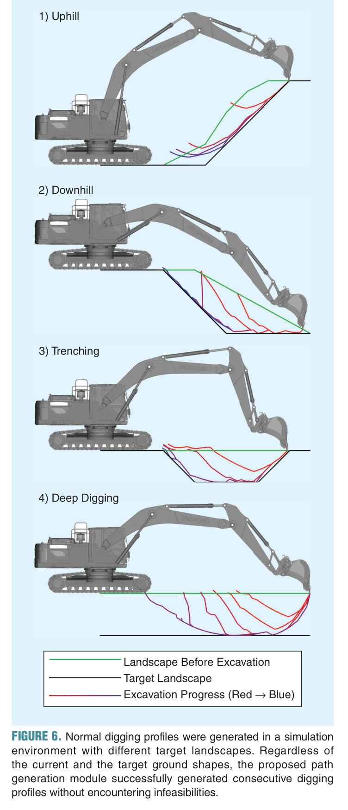
원문 Figure 6 · PDF p.9 — FIGURE 6. Normal digging profiles were generated in a simulation environment with different target landscapes. Regardless of the current and the target ground shapes, the proposed path generation module successfully generated consecutive digging profiles without encountering infeasibilities.
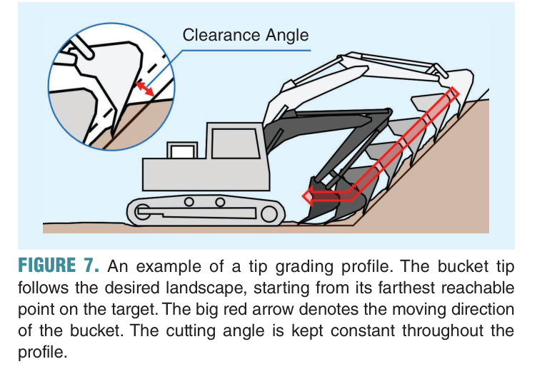
원문 Figure 7 · PDF p.9 — FIGURE 7. An example of a tip grading profile. The bucket tip follows the desired landscape, starting from its farthest reachable point on the target. The big red arrow denotes the moving direction of the bucket. The cutting angle is kept constant throughout the profile.
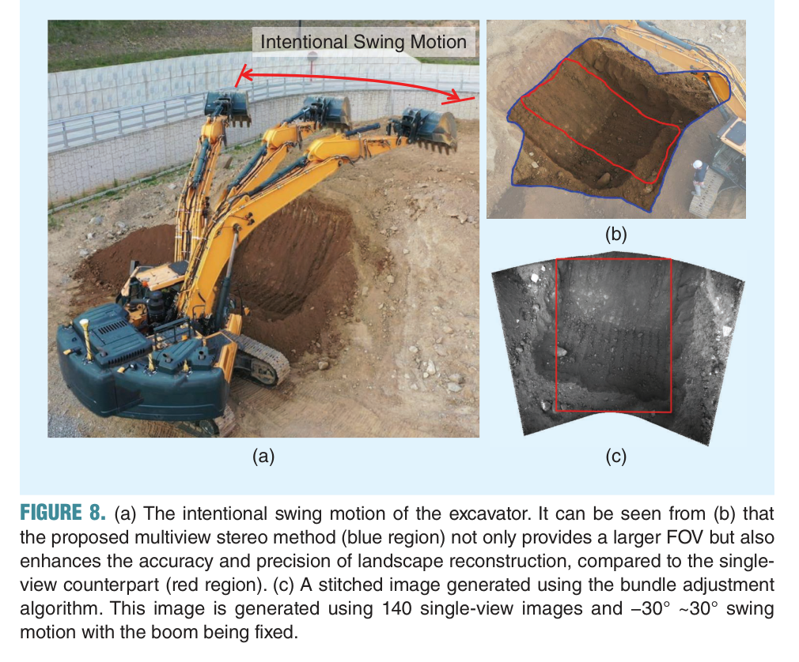
원문 Figure 8 · PDF p.11 — FIGURE 8. (a) The intentional swing motion of the excavator. It can be seen from (b) that the proposed multiview stereo method (blue region) not only provides a larger FOV but also enhances the accuracy and precision of landscape reconstruction, compared to the single- view counterpart (red region). (c) A stitched image generated using the bundle adjustment algorithm. This image is generated using 140 single-view images and −30° ~30° swing motion with the boom being fixed.
4.실험 결과
실험 환경·장비·데이터
30톤급 Hyundai HX300AL, 약 1 m³ bucket을 사용해 실제 야외 토사장에서 45° 상향 사면을 조성했다.
작업 목표는 폭 3.5 m, 높이 1.5 m의 사면이었고 흙과 최대 약 10 cm 크기의 자갈이 섞인 현장을 사용했다.
cabin과 boom에 3D LiDAR 두 대, boom에 stereo camera, cabin·boom·stick·bucket에 IMU, swing rotary encoder를 장착했다.
유압 밸브는 100 Hz로 제어했고 LiDAR의 대표 정확도는 약 3 cm, IMU 약 0.1°, rotary encoder 약 2°였다.
온보드 컴퓨터는 quad-core 1.8 GHz, RAM 8 GB였으며 LiDAR는 10 Hz, 실시간 landscape map은 5 Hz로 갱신했다.
최종 ground truth와 검사 비교에는 Trimble total station을 사용했다.
실험 프로토콜
장비 base를 세 위치로 수동 이동시킨 뒤 각 위치에서 차체가 정지한 상태로 지정 ROI를 반복 굴착했다.
현재 표면이 목표보다 50 cm 이상 남은 영역에는 normal digging을 적용하고 목표면 근처에서는 tip grading을 수행했다.
각 scoop 후 dual-LiDAR 지도를 갱신해 다음 공격점과 경로를 다시 생성했다.
작업 후 stereo camera로 swing -30°에서 30°까지 약 140장의 영상을 취득하고 제안 BA로 지형을 복원했다.
별도 상향·평지 장면에서 total station, full BA와 제안 검사법의 면적·시간·중앙오차를 비교했다.
실제 45° 사면의 절대 표고오차와 현장 검사시간을 기록했다.
비교 기준
정밀검사 시간 비교를 위한 Trimble total station 측량
모든 pose와 point를 함께 반복 최적화하는 full bundle adjustment
LiDAR 기반 지형과 단일 stereo reconstruction의 표면오차 비교
유압 제약을 제거한 MPC ablation
평가 지표
목표 사면 대비 절대 표고오차의 평균과 표준편차
검사 표면오차의 중앙값과 표준편차
검사 대상 면적, 전체 시간과 단위면적당 시간
고수준 경로 생성시간과 MPC 계산시간
굴착 초기와 후기의 버킷 경로·표면 변화
힘·동력·실린더 변위·펌프 유량 제약 만족 여부
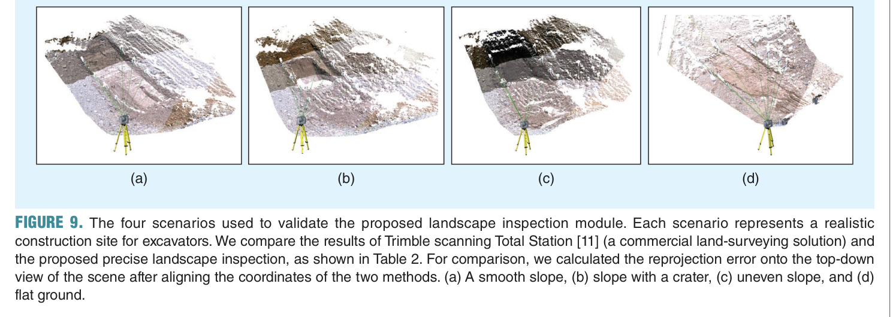
원문 Figure 9 · PDF p.12 — FIGURE 9. The four scenarios used to validate the proposed landscape inspection module. Each scenario represents a realistic construction site for excavators. We compare the results of Trimble scanning Total Station [11] (a commercial land-surveying solution) and the proposed precise landscape inspection, as shown in Table 2. For comparison, we calculated the reprojection error onto the top-down view of the scene after aligning the coordinates of the two methods. (a) A smooth slope, (b) slope with a crater, (c) uneven slope, and (d) flat ground.
핵심 결과 해석
실제 45° 상향 사면 작업에서 시스템은 세 base 위치를 거치며 반복적으로 토양을 제거하고 목표면에 접근했다. 최종 절대 표고오차는 평균 7.4 cm, 표준편차 5.3 cm였고 논문은 사면을 10 cm 이내로 시공했다고 요약한다. 초기 normal digging에서는 무거운 토양 하중 때문에 버킷 경로 오차가 순간적으로 약 50 cm까지 커졌으나 작업이 진행돼 토량이 감소하면서 추종이 개선됐다. 이는 검사 정확도와 실제 시공오차를 구분해야 함을 보여준다.
검사 benchmark에서 상향 장면은 total station이 28 m²를 2542초, full BA가 75 m²를 833초, 제안법이 75 m²를 48초에 처리했다. 평지 장면은 각각 75 m²·3521초, 101 m²·978초, 101 m²·59초였다. 네 평가 장면에서 LiDAR의 중앙오차는 2.7, 1.4, 0.8, 3.0 cm, 단일 stereo는 1.5, 1.5, 2.8, 9.1 cm였지만 제안 다중영상 검사는 0.4, 0.6, 0.8, 0.5 cm를 기록했다.
실제 사면의 최종 검사는 영상 획득 약 60초와 알고리즘 처리 25.8초가 필요해 0.74 s/m²였고, Trimble 측량은 1192초, 34.2 s/m²였다. 고수준 경로는 약 0.3초, 한 MPC 계산은 0.08초 미만이었다. 따라서 인식·경로·제어·검사의 각 모듈이 실제 작업시간 안에 동작했지만, base 이동은 자동 계획하지 않았고 카메라가 어려운 조명·날씨 및 단단한 암반은 범위 밖이다.
정량 결과
평가 항목
정량 결과
조건·맥락
원문 근거
실제 사면 절대 표고오차
평균 7.4 cm, 표준편차 5.3 cm
30톤 HX300AL의 폭 3.5 m, 높이 1.5 m, 45° 상향 사면 작업
PDF p.12
상향 장면 제안 검사시간
48 s, 0.64 s/m²
75 m²; full BA 833 s, total station 2542 s
PDF p.11
평지 장면 제안 검사시간
59 s, 0.584 s/m²
101 m²; full BA 978 s, total station 3521 s
PDF p.11
제안 검사 중앙오차
0.4 / 0.6 / 0.8 / 0.5 cm
네 개 평가 장면; total station ground truth
PDF p.12
실제 현장 검사시간
영상 60 s + 처리 25.8 s, 0.74 s/m²
실제 45° 사면; Trimble은 1192 s, 34.2 s/m²
PDF p.13
고수준 경로 생성시간
약 0.3 s
온보드 quad-core 1.8 GHz 컴퓨터
PDF p.14
MPC 계산시간
<0.08 s
6 s horizon과 0.04 s 내부 이산화
PDF p.14
초기 최대 경로 추종오차
약 50 cm
초기 normal digging에서 무거운 토양 하중이 작용한 구간
PDF p.12
실패 사례와 경계조건
초기 normal digging에서 큰 토양 하중 때문에 버킷 경로 오차가 약 50 cm까지 증가했다.
단일 stereo 방식은 한 평가 장면에서 중앙오차 9.1 cm로 악화돼 단일 시점 깊이의 불안정성을 보였다.
굴착 중 LiDAR 지도는 진동과 40 cm cell 때문에 최종 sub-centimeter 검사에 직접 사용할 수 없다.
어두운 환경이나 악천후에서는 stereo 검사 품질이 떨어질 수 있으며 논문도 backup sensor 필요성을 제시한다.
단단한 암반이나 큰 매설물처럼 버킷이 관입할 수 없는 영역은 현재 지형 높이만으로 판단하지 못한다.
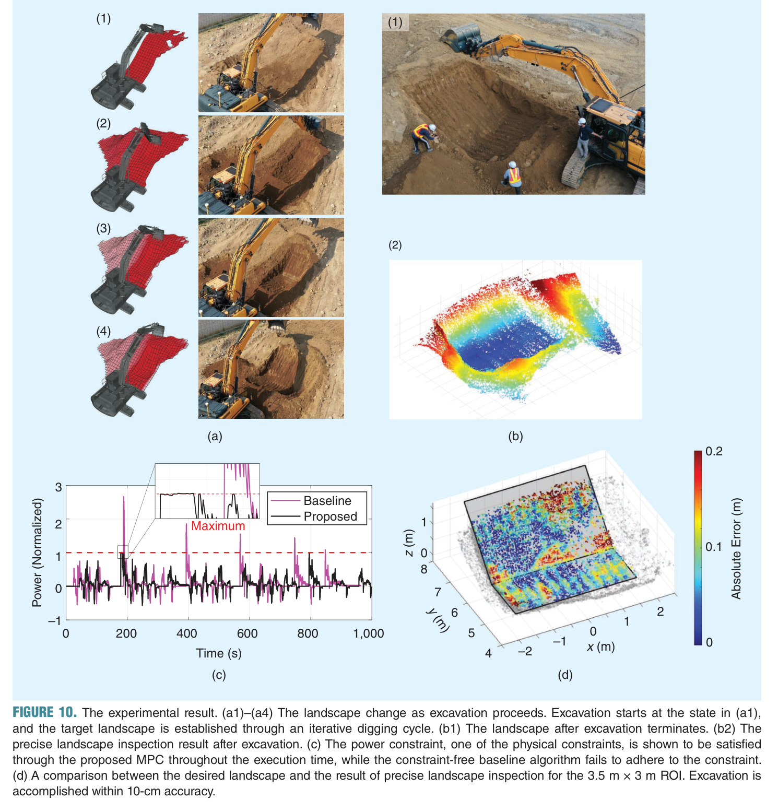
원문 Figure 10 · PDF p.13 — FIGURE 10. The experimental result. (a1)–(a4) The landscape change as excavation proceeds. Excavation starts at the state in (a1), and the target landscape is established through an iterative digging cycle. (b1) The landscape after excavation terminates. (b2) The precise landscape inspection result after excavation. (c) The power constraint, one of the physical constraints, is shown to be satisfied through the proposed MPC throughout the execution time, while the constraint-free baseline algorithm fails to adhere to the constraint. (d) A comparison between the desired landscape and the result of precise landscape inspection for the 3.5 m × 3 m ROI. Excavation is accomplished within 10-cm accuracy.
5.한계 및 향후 연구
현재 한계
crawler base의 이동 위치와 이동경로는 시스템이 계획하지 않고 세 작업 위치로 수동 이동했다.
실험은 하나의 토사장과 45° 상향 사면 작업에 집중돼 다양한 토질·형상·기상 조건의 일반화가 검증되지 않았다.
실시간 지도는 40 cm cell과 LiDAR 오차로 인해 정밀검사보다 낮은 해상도를 가진다.
stereo 검사는 조명, 먼지, 비·눈과 야간 조건에 민감하며 별도의 능동 깊이 backup이 없다.
지표면 형상만으로는 지중 암석이나 관입 불가능 영역의 diggability를 사전에 판단하기 어렵다.
단일 굴착기의 독립 작업만 다뤄 운반차·다른 장비와의 협업 및 작업장 수준 일정계획은 포함하지 않는다.
향후 연구
압력과 굴착력으로 3차원 diggability 지도를 구축해 단단한 암반과 지중 장애물을 표현한다.
카메라가 실패하는 조명·기상에 대비해 LiDAR 또는 다른 능동 센서 기반 정밀검사를 융합한다.
crawler 이동과 base 배치, 주행가능성을 포함하는 장기 고수준 작업계획으로 확장한다.
30톤 실제 장비로 45° 사면을 평균 7.4 cm 오차로 조성했고, 별도 검사는 0.4~0.8 cm 중앙오차와 수십 초 처리시간을 달성했다.
한계는?
base 이동은 수동이고 단일 현장·작업에 한정되며, 악천후·야간·암반·다중장비 협업은 해결되지 않았다.
#시스템통합·현장실증#환경인식#작업·궤적계획#제어·MPC#LiDAR·스테레오 카메라#elevation grid#DFS 경로 탐색#제약 MPC#다중시점 영상 검사
나의 의견 / 우리 연구와의 연관성
이 논문은 필드로봇 자율화에서 인식-계획-제어만으로는 부족하고 작업 후 품질검사가 다시 계획으로 연결돼야 함을 보여주는 대표적 시스템 사례다. 대시보드는 실시간 2.5D 지도와 별도 검사 지도를 구분하고, 계획 토량·MPC 제약·실제 시공오차·검사 신뢰도를 한 사이클로 묶어 표시할 필요가 있다.
맥락지능 AI 기반 이동형 작업로봇으로 확장하면 작업 목표, 지형 변화, 접촉 난이도와 품질 요구가 상위 맥락이 되고 경로·제어·검사 모듈이 이를 공유해야 한다. 특히 pressure-derived diggability와 base 이동계획을 추가하면 단일 위치 굴착을 넘어 현장 전체의 자율 작업순서와 위험회피로 연결할 수 있다.
실시간 인식과 고정밀 검사를 목적별로 분리한 설계는 다른 현장 로봇에도 직접 적용할 수 있다.
작업 전후 지형 차이와 검사 오차를 폐루프 KPI로 삼아 재작업 여부를 자동 결정할 수 있다.
경로 생성시간, MPC 계산시간, 유압 제약 여유와 품질오차를 한 대시보드에서 연결할 수 있다.
다음 확장점은 crawler base 이동, 지중 diggability, 악천후 센싱과 다중장비 협업이다.
7.전체 그림·표
본문 핵심 위치에 배치하지 않은 원문 Figure와 Table을 원문 페이지 순서로 수록한다.
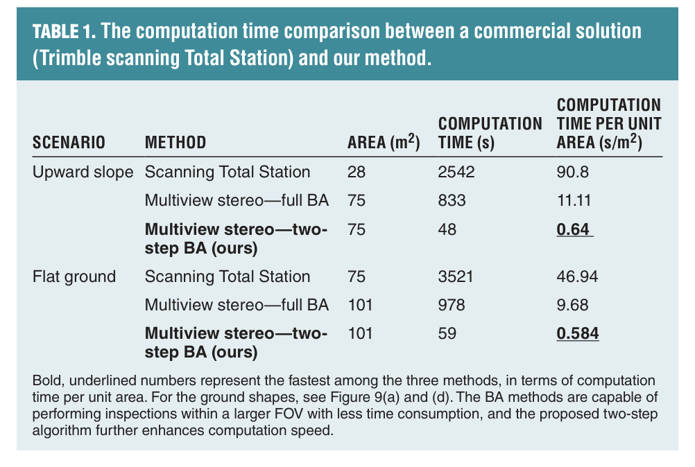
원문 Table 1 · PDF p.11 — TABLE 1. The computation time comparison between a commercial solution (Trimble scanning Total Station) and our method.
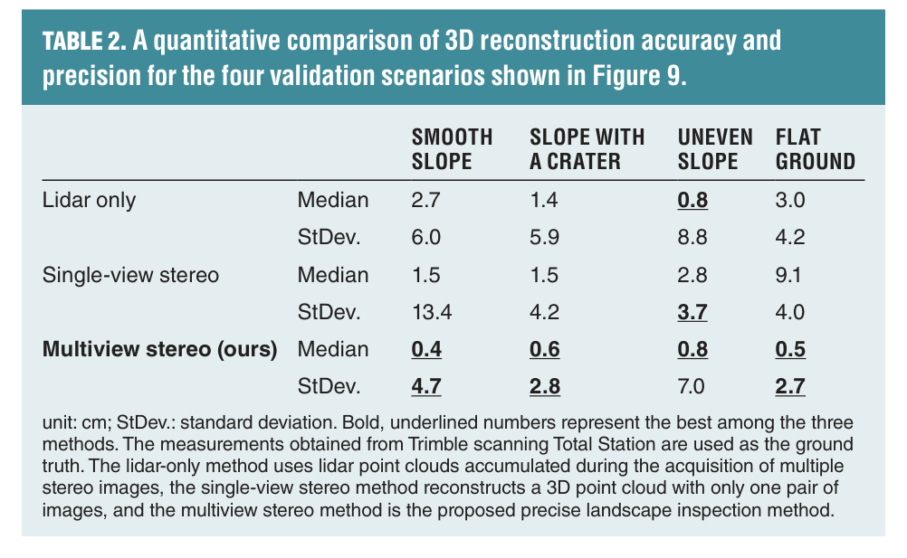
원문 Table 2 · PDF p.12 — TABLE 2. A quantitative comparison of 3D reconstruction accuracy and precision for the four validation scenarios shown in Figure 9.